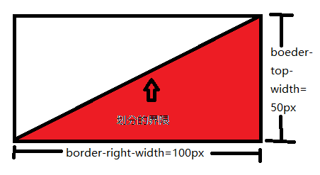

div p:nth-child(1)并没有指向第一个p标签
nth-child()选择器不区分元素类型，默认从第一个元素开始，需要添加选择的类型，可以使用p:nth-of-type()
由于canvas存在canvas和canvas.getBoundingClientRect()两个画布，需要解决缩放问题
left:(left-canvasLeft+width/2)/(bbox.width/canvas.width),
top:(top-canvasTop+height/2)/(bbox.height/canvas.height)
其中
left为鼠标距离html左侧距离，canvasLeft为画布在html中left距离
width为触发事件园的宽度， (bbox.width/canvas.width)为缩放比例，图画都会首先画在canvas中，然后缩放到bbox
canvas中画的圆会变成椭圆
canvas默认大小为300*150，需要人为指定大小
图形之间会画出意想不到的线条
画完之后使用close Path（）闭合 可以选择closePath(); context.stroke(); 或者 context.stroke(); closePath();
apply
function Person(name){ this.name=name; this.sayname=function (){ alert(this.name); } } function Student(name){ //① Person.apply(this,arguments);用这种方法实现继承 //② return new Person(name);勉强算继承 //③ Person(arguments);没有实现继承，sayname方法不可用 } var xiaoming=new Student("小明"); xiaoming.sayname();
String的replace()方法
var result = phoneNumber.replace(/^(\d{3})(\d{4})(\d{4})$/,'$1'+flag+'$2'+flag+'$3');
判断实例
function Ninja(){} var ninja=new Ninja(); typeof ninja //"object" ninja instanceof Ninja //true ninja.constructor==Ninja //true
继承和复制的选择
对于自己定义的构造器可以选择prototype属性来继承，但如果想对原生的对象如Array,Object等进行扩张，最好不要通过继承来实现，可以在自定义对象上通过call apply来实现。如： function MyArray(){} MyArray.prototype.length=0; (function(){ var methods=['push','pop','shift',"unshift",'slice','splice','join']; for(var i=0;i<methods.length;i++) (function(name){ MyArray.prototype[name]=function(){ return Array.prototype[name].apply(this,arguments); }; })(methods[i]); })();
把类数组对象转化为数组
类数组对象有：{'0': 'a','1': 'b','2': 'c',length: 3};（单层结构）和可遍历（iterable）的对象（包括ES6新增的数据结构Set和Map） let arrayLike = { '0': 'a', '1': 'b', '2': 'c', length: 3 }; // ES5的写法 var arr1 = [].slice.call(arrayLike); // ['a', 'b', 'c'] 等价于var arr1 = Array.prototype.slice.call(arrayLike); // ES6的写法 let arr2 = Array.from(arrayLike); // ['a', 'b', 'c'] 实际应用中，常见的类似数组的对象是DOM操作返回的NodeList集合，以及函数内部的arguments对象。 Array.from都可以将它们转为真正的数组。 Array.of方法用于将一组值，转换为数组。 Array.of(3, 11, 8) // [3,11,8] Array.of(3) // [3]
控制台弹出未添加注解警告
无论在控制器中还是指令中的controller中，都需要为其注入实例。
字符串反转
message.split('').reverse().join('')
判断传入参数类型
常用的有typeof,对于数组有Array.isArray() 可以使用该方法判断类型：该方法返回类型的小写形式 function judgeType(args){ return /.*\s(.*)\]$/.exec(Object.prototype.toString.call(args))[1].toLowerCase(); } 目前(array,number,object,date,string,regexp,function,null,undefined)已通过测试
hasOwnProperty
hasOwnProperty()函数用于指示一个对象自身(不包括原型链)是否具有指定名称的属性。如果有，返回true，否则返回false。 该方法属于Object对象，由于所有的对象都"继承"了Object的对象实例，因此几乎所有的实例对象都可以使用该方法。
本人新手，在学习阮一峰大师的ES6，看到这里： async function logInOrder(urls) { // 并发读取远程URL const textPromises = urls.map(async url => { const response = await fetch(url); return response.text(); }); // 按次序输出 for (const textPromise of textPromises) { console.log(await textPromise); } } 上面代码中，虽然map方法的参数是async函数，但它是并发执行的，因为只有async函数内部是继发执行，外部不受影响。后面的for..of循环内部使用了await，因此实现了按顺序输出。 上面代码使用fetch方法，同时远程读取一组 URL。每个fetch操作都返回一个 Promise 对象，放入textPromises数组。 以上摘自阅读内容，根据大师的话“只有async函数内部是继发执行”，我有两种理解：1：map()函数内的方法是并发执行的。2：map()函数中的async函数之间是并发执行的。为了验证，我自己写了一个方法，用计时模拟异步事件： [1,2,3,4,5].map( (value)=>{ var date=new Date(); while(new Date().getTime()<date.getTime()+6000-value*1000){} ;console.log(value); } ); 结果是按顺序输出1，2，3，4，5. 于是我怀疑是async函数之间是并发的： [1,2,3,4,5].map( async (value)=>{ var date=new Date(); while(new Date().getTime()<date.getTime()+6000-value*1000){} console.log(value); } ); 结果依然是1，2，3，4，5. 以上两种情况并没有实现并发（5在1之前输出，我试过增加while的循环时间，但是没有效果） 于是我想问；1.map()是不是一个并发执行的函数？2.async函数之间是并发的吗？3.我的代码有什么问题吗？
function timeout(ms) { return new Promise((resolve) => { setTimeout(resolve, ms); }); } async function asyncPrint(value, ms) { await timeout(ms); console.log(value); } [1,2,3,4,5].map( async (value)=>{ await asyncPrint(value,6000-value*1000); } ); 用以上方法可以实现并行执行，倒序输出54321。 JavaScript是单线程执行的，无法同时执行多段代码。当某一段代码正在执行的时候，所有后续的任务都必须等待，形成一个队列。一旦当前任务执行完毕，再从队列中取出下一个任务，这也常被称为 “阻塞式执行”。所以一次鼠标点击，或是计时器到达时间点，或是Ajax请求完成触发了回调函数，这些事件处理程序或回调函数都不会立即运行，而是立即排队，一旦线程有空闲就执行。假如当前 JavaScript线程正在执行一段很耗时的代码，此时发生了一次鼠标点击，那么事件处理程序就被阻塞，用户也无法立即看到反馈，事件处理程序会被放入任务队列，直到前面的代码结束以后才会开始执行。如果代码中设定了一个 setTimeout，那么浏览器便会在合适的时间，将代码插入任务队列，如果这个时间设为 0，就代表立即插入队列，但不是立即执行，仍然要等待前面代码执行完毕。所以 setTimeout 并不能保证执行的时间，是否及时执行取决于 JavaScript 线程是拥挤还是空闲。 大概搞懂了，当然这是个人理解： map()函数内不是并发执行的 async函数被map()函数遍历，由于async函数被执行时立即返回一个Promise，所以可以看作并行执行 setTimeout()计时应该是javaScript自己调用时间戳执行的吧，这部分我网上也查不到
字的长度大于总长度时会分成多行
使用word-break:keep-all,防止拆行
css中 border-radius: 100px / 50px; 写法是什么意思？
border-radius的含义是：圆角。 border-radius是一种缩写方法。如果“/”前后的值都存在，那么“/”前面的值设置其水平半径，“/”后面值设置其垂直半径。
可以有这种操作->border-radius:50% 50% 50% 50% / 60% 60% 40% 40%;
CSS里面em是什么鬼
em表示倍数1em即一倍,一般body默认font-size:16px,所以1em=16px;可以更改body中font-size的值，从而改变1em的大小
让滚动条触底
JQuery: textarea.scrollTop(textarea.height()); //等价于JS: textarea[0].scrollTop=textarea[0].scrollHeight;
利用border画各种形状技巧
在border交界处（如border-top与border-right），会按照其各自的border-width之比划分界限
图中border-left:none;border-bottom:none;(或者可以看成border交界处的放大图)
严格模式主要有哪些限制
变量必须声明后再使用 函数的参数不能有同名属性，否则报错 不能使用with语句 不能对只读属性赋值，否则报错 不能使用前缀0表示八进制数，否则报错 不能删除不可删除的属性，否则报错 不能删除变量delete prop，会报错，只能删除属性delete global[prop] eval不会在它的外层作用域引入变量 eval和arguments不能被重新赋值 arguments不会自动反映函数参数的变化 不能使用arguments.callee 不能使用arguments.caller 禁止this指向全局对象 不能使用fn.caller和fn.arguments获取函数调用的堆栈 增加了保留字（比如protected、static和interface）
超链接跳转和click事件同时出现，想要屏蔽超链接跳转
$(document).on("click", ".p2", function() { previmg(); return false; //返回一个false值，让a标签不跳转 }); return false; 等价于 event.preventDefault();//阻止事件的默认行为 event.stopPropagation();//阻止该dom节点往上冒泡 <body><form id="form1" runat="server"><div id="divOne" onclick="alert('我是最外层');"><div id="divTwo" onclick="alert('我是中间层！')"><a id="hr_three" href="http://www.baidu.com" mce_href="http://www.baidu.com"onclick="alert('我是最里层！')">点击我</a></div></div></form></body> 比如上面这个页面， 分为三层：divOne是第外层，divTwo中间层，hr_three是最里层; 他们都有各自的click事件，最里层a标签还有href属性。 运行页面，点击“点击我”,会依次弹出：我是最里层---->我是中间层---->我是最外层 ---->然后再链接到百度. 这就是事件冒泡，本来我只点击ID为hr_three的标签，但是确执行了三个alert操作。 事件冒泡过程（以标签ID表示）：hr_three----> divTwo----> divOne 。从最里层冒泡到最外层。 如何来阻止? 1.event.stopPropagation(); $(function() { $("#hr_three").click(function(event) { event.stopPropagation(); }); }); 再点击“点击我”，会弹出：我是最里层，然后链接到百度 2.return false; 如果头部加入的是以下代码 $(function() { $("#hr_three").click(function(event) { return false; }); }); 再点击“点击我”，会弹出：我是最里层，但不会执行链接到百度页面 由此可以看出： 1.event.stopPropagation(); 事件处理过程中，阻止了事件冒泡，但不会阻击默认行为（它就执行了超链接的跳转） 2.return false; 事件处理过程中，阻止了事件冒泡，也阻止了默认行为（比如刚才它就没有执行超链接的跳转） 还有一种有冒泡有关的： 3.event.preventDefault(); 如果把它放在头部A标签的click事件中，点击“点击我”。 会发现它依次弹出：我是最里层---->我是中间层---->我是最外层，但最后却没有跳转到百度 它的作用是：事件处理过程中，不阻击事件冒泡，但阻击默认行为（它只执行所有弹框，却没有执行超链接跳转）